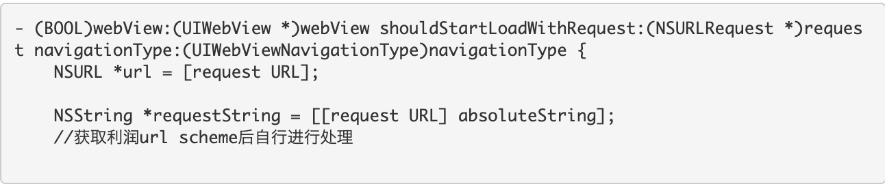
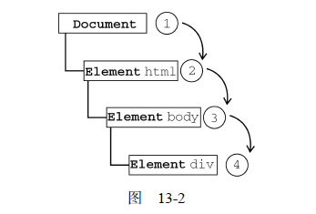

1.onclick="func()"
2.dom.click
3.dom.addEventListener/dom.attachevent
很古老
键盘事件 keydown/keyup/keypress
鼠标事件 mousedown/mousemove/mouseup/contextmenu/click
dddddd
dddddd
@@@@@@
其他事件 frocus/blur/input
移动事件 touchstart/touchmove/touchend 链接
事件冒泡
事件捕获
所有事件
事件代码代理链接